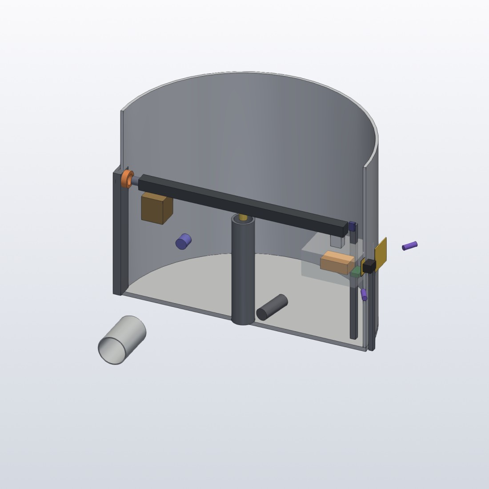
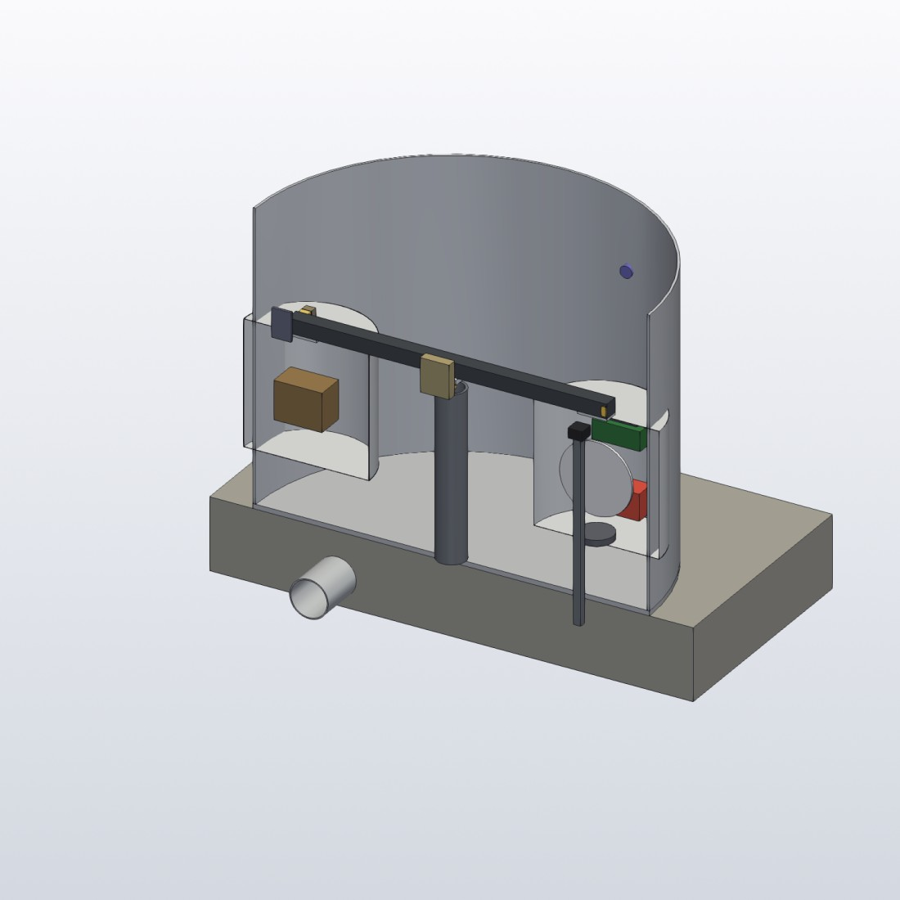
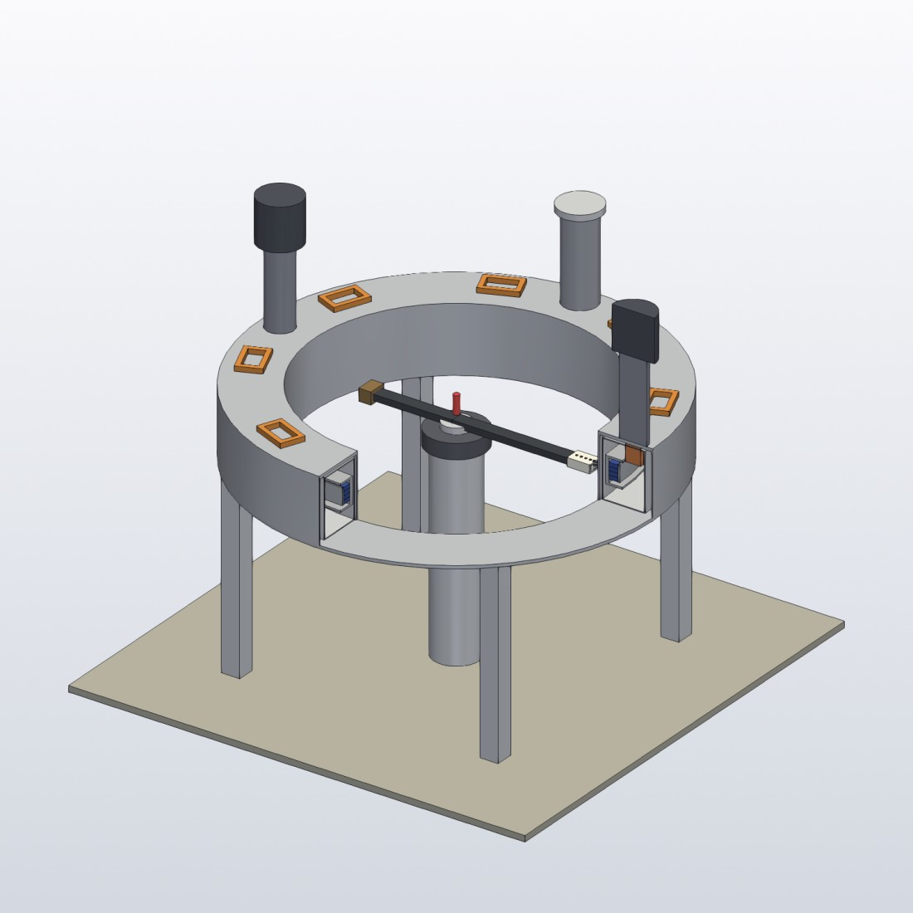
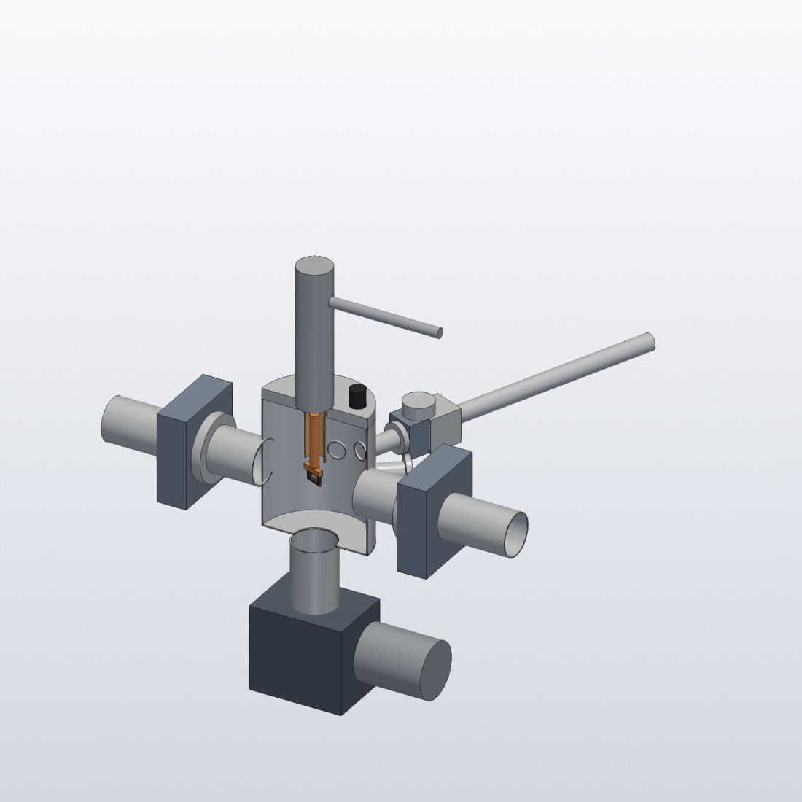
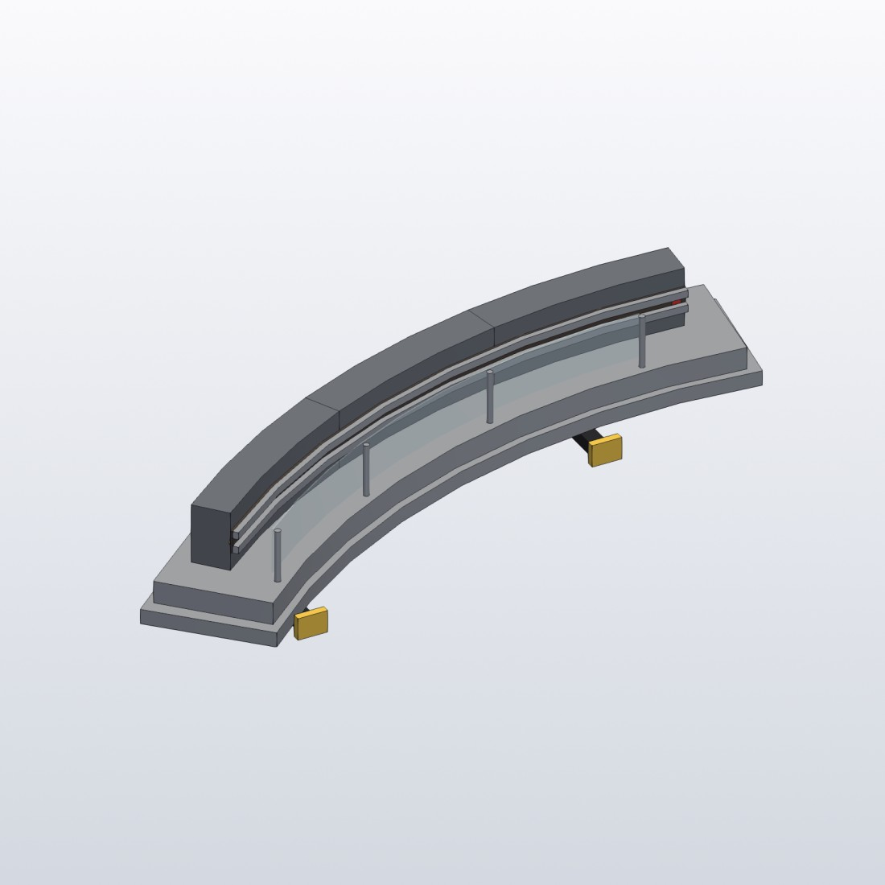

Spheromax · open record v1.0 · 14 November 2026
Five experiments to settle what is left of the Pais patents
THE RESULT: nothing in the patents survives as physics. What survives is engineering: a magnetically held rotor and a light-driven film in a laser cavity. Two other claims can only be settled by null tests. Five experiments decide what is left.
Simulated concept rigs · nothing here has been builtCosts ±50%Made with AI · Claude (Anthropic)Hippocratic License 3.0 (HL3-MIL)
The film · 1:52
Simulated concept rigs for tests T5, T4, T2, T3 and T1. Only the T2 field lines are computed physics (Biot–Savart). Flashing images. The music is not covered by the licence: all rights reserved.
The review in numbers
- Review passes
- 11
- Logged searches
- 162
- Settled results
- 36
- Pages of maths
- 40
- Deciding tests
- 5
The review examined, gap by gap, the physics claims in Salvatore Pais's US Navy patents (an "inertial mass reduction" craft, an electromagnetic field generator, a gravitational-wave generator, a fusion device and a room-temperature superconductor), plus related claims of propellantless thrust and light-driven superconductivity. It stopped by its own rule when a full pass moved nothing.
The five tests

$0.2–0.5MT5Is the "X1" thrust claim just static electricity from trapped charge?

$0.7–1.3MT4Do electromagnetic fields couple to gravity at nN or pN? A null is predicted.

$1.6–3.0MT2Can a superconducting rotor and stator stay quench-safe at about 20 K?

$0.7–1.2MT3Can a light-driven state in a K3C60 film be kept on in a laser cavity, and is it a superconductor?

$1.1–2.6MT1Does burst-rotor debris load its wall no more than the spinning rotor did?
All five together: about $4–9M over about 3 years. The first two answers (T5 and T4): about $1–2M. Rough-order-of-magnitude costs, assuming magnet and laser time is won by peer-reviewed proposal.
Read the record
| Report | Start here. 8 pages: why, how, the five tests, costs and what each result would mean.PDF · 1 MB |
|---|---|
| S4 Sheets | 40 illustrated research sheets, grouped by the test each one feeds, with a contents page.PDF · 17 MB |
| S1 Maths | Every derivation with its inputs, proofs and references. 40 pages.PDF · 1 MB |
| S2 Drawings | 20 A3 concept drawings: arrangements, sections, schematics, equipment lists.PDF · 3 MB |
| S3 CAD | 8 STEP assemblies, DXF views, renders and the scripts that made them.ZIP · 21 MB |
| S5 Records · code | Search logs with sources, test plans, costs, and the Python that computes and cross-checks every number.On GitHub |
| S6 Film | The 1:52 film above.MP4 · 42 MB |
From the sheets
Made with AI, and its limits
- The author set the questions and goals, directed the research and chose which paths to keep.
- Claude (Anthropic), an AI model, ran and logged the literature searches, derived and computed the results, designed the concept rigs and drawings, made the film and drafted the text. AI tools are not listed as authors.
- This record is not peer reviewed. The rigs are concept designs for review, not for manufacture.
- The X1 and driven-K3C60 claims belong to others and are described from public sources.
- Every number can be checked against the code and sources in the record. Please report errors on GitHub.
Purpose and licence
This work is for humanity. It may not be used for war, for greed, or for any inhumane purpose. It is offered so that people can become more humane, and for our advancement in technology and in spirit, in harmony and balance.
Hippocratic License 3.0 with the Military Activities module (HL3-MIL): licence text · LICENSE.md. No patent has been filed on this work. The film's soundtrack is excluded: all rights reserved.